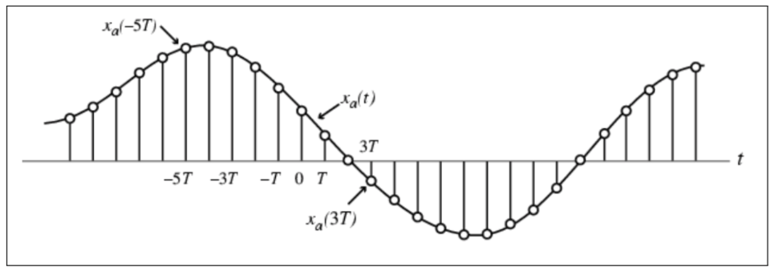

第三章 离散时间傅里叶变换¶
前面的一章中，我们学习了离散时间信号和系统在时域中的表示和分析方法。这一章，我们将开始学习离散时间信号在频域中的表示和分析方法。
第一讲 从连续时间傅里叶变换到离散时间傅里叶变换¶
1. 傅里叶变换的作用¶
2010年南非世界杯上，“呜呜拉祖”被主场球迷用来作为助威的工具。它可以发出超过一百分贝的噪音，最高可达到一百二十分贝，因此在比赛过程中，特别是比赛转播过程中，呜呜拉祖的声音往往会掩盖住现场解说的声音。所以，对于听解说的球迷来说，呜呜拉祖的助威声音往往就是噪音。我们可以听一听带有呜呜拉祖噪音的语音。

那么，我们如何去除这样的噪音呢？
先给大家听一下一种去除呜呜拉祖噪声算法的结果。
呜呜拉祖噪音的消除是一个复杂的问题，但是基本思路是将时域信号变换到频域，然后从频域将呜呜拉祖噪音去除，然后反变换到时域，从而得到去除呜呜拉祖噪音的语音。

为什么我们可以从频域上将呜呜拉祖噪音去除呢？这是因为原始语音的频率和呜呜拉祖的频率是不同的，人说话的频率主要分布在50~500Hz，而呜呜拉祖的频率一般不同于这个频率。因此，频域中呜呜拉祖噪声和原始的语音信号是可以分离的。基于这个原理，所以一般我们将信号变换到频域，在频域中滤除噪声信号。
2. 连续时间傅里叶变换¶
在介绍离散时间傅里叶变换之前，我们首先来回顾一下连续时间傅里叶变换的概念。Joseph Fourier（1768-2830）是法国伟大的数学家、物理学家。从某种意义上来说，傅里叶也可以被称为我们信号处理领域的鼻祖，因为大家所学的《信号与系统》、《数字信号处理》等等课程，从某种以上来说都与傅里叶变换紧密相关。不仅仅如此，傅里叶变换也是研究光学工程、医疗成像、地震预测等等领域中的必备工具。
我们有必要瞻仰一下这位伟大的科学家——Joseph Fourier

傅里叶变换通过这个公式将时域信号$f(t)$变换到频域
相信大家对这个公式既熟悉又陌生。之所以熟悉，因为这个公式在《数学分析》、《电路分析》和《信号与系统》中都学到过，也将在未来的专业课学习过程中继续学习，并将贯穿大家整个职业生涯（如果同学们继续从事信息工程领域的话）。而之所以陌生，是因为这个看似简单的傅里叶变换（线性）过程，在不同的应用场合，其内涵是不同的（参考斯坦福课程EE261）。
从信号处理的角度来说，傅里叶变换的一种物理解释为：任意连续且周期的信号都能表示为一系列正弦信号的叠加。

3. 从连续时间傅里叶变换到离散时间傅里叶变换¶
连续时间信号的傅里叶变换，可以发现时间自变量$t$的定义是连续的，
那对离散时间信号来说，其傅里叶变换如何定义呢？首先，我们来回顾一下离散时间信号和连续时间信号之间的关系。

从图中可以看出，离散时间信号是对连续时间信号$x_a(t)$的等间隔抽样，数学表达式为
其中，$T$为抽样间隔，$\delta(t)$为抽样函数。然后，根据傅里叶变换的定义得到抽样后信号的傅里叶变换为 \(x\)
如果定义
带入上面的推导中，可以得到
4. 例子¶
\(a=b\)